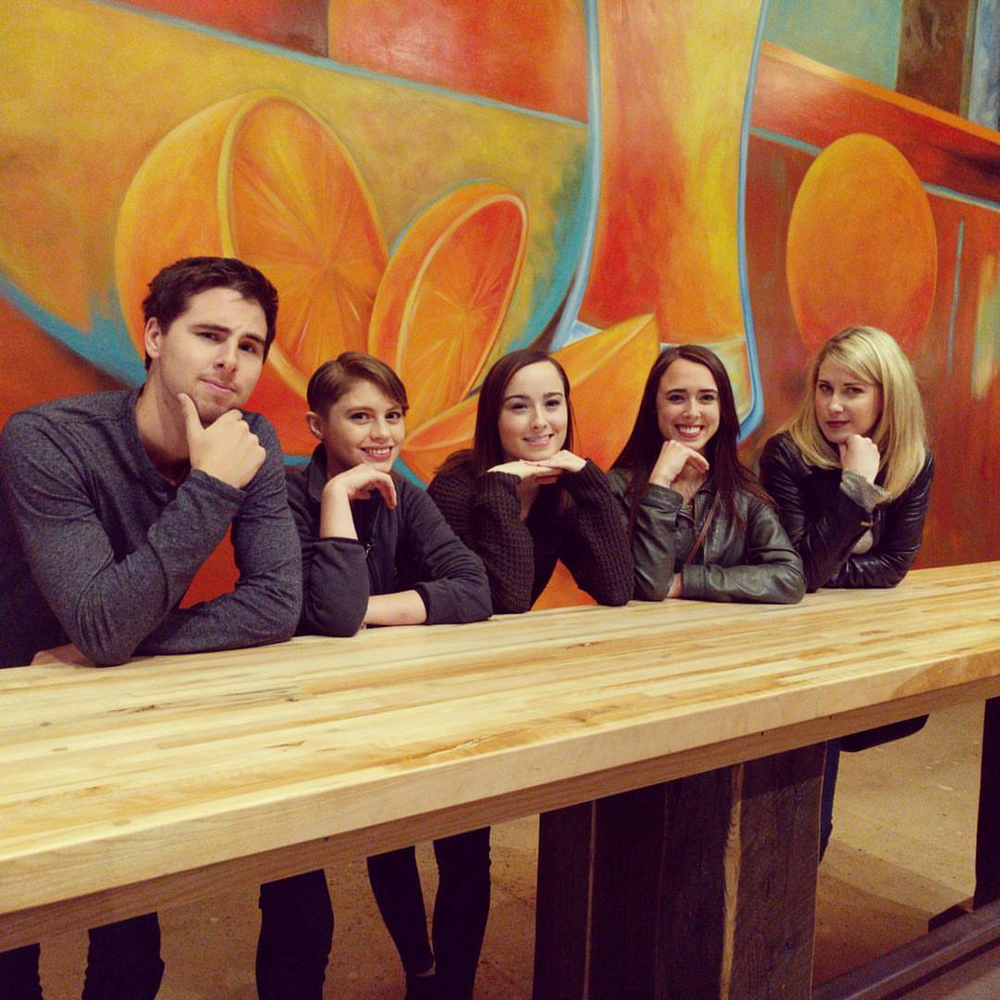
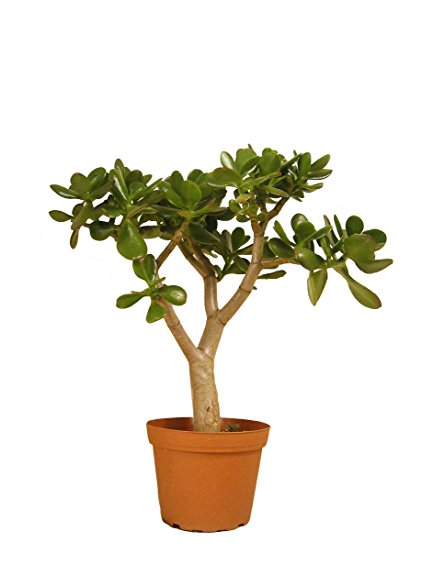
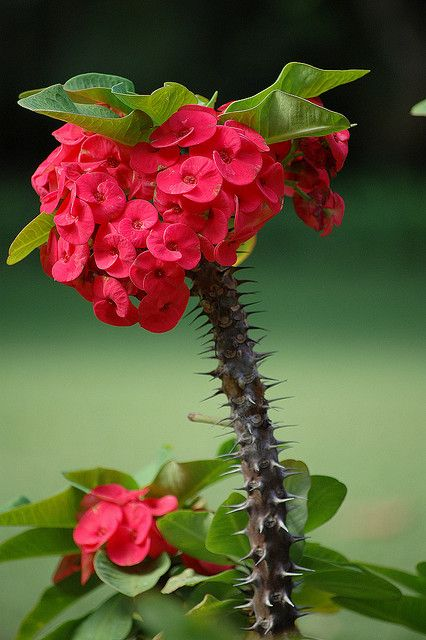
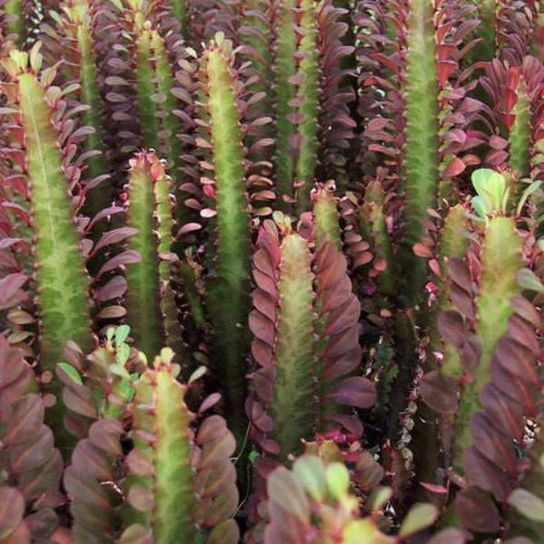
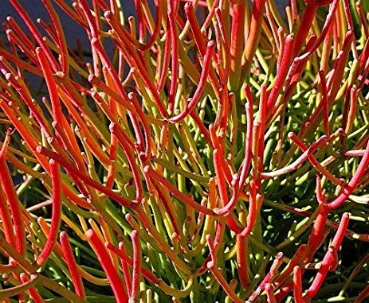
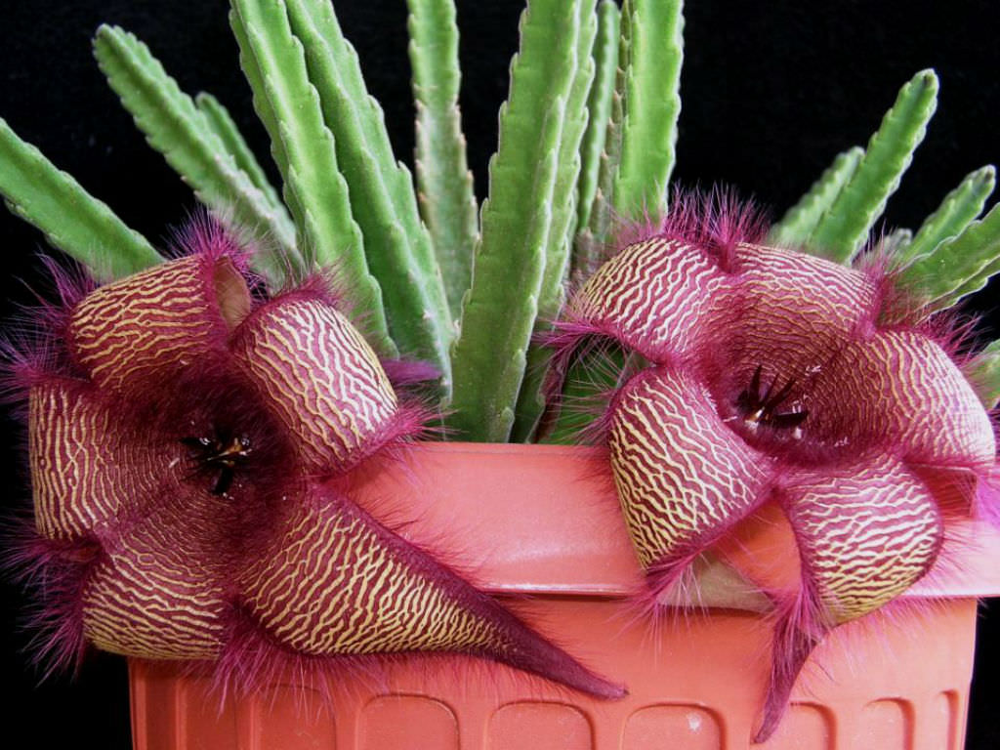

I was born in Anchorage, AK and moved to Denver, CO in January 2016. I worked in the staffing industry until I decided to attend Galvanize. One of my best friends, Rachel, works as a software engineer after completing a bootcamp called Hack Reactor. Her success is part of what inspired me to go to Galvanize. Here we are with some of our friends from Alaska:
If you would like to learn more, you can select from the following options:
I enjoy collecting a variety of succulent plants. My collection includes but is not limited to:
| Name | Description | Picture |
|---|---|---|
| Jade | Jade plants have small pink or white flowers and are common houseplants worldwide. Much of their popularity is due to the low levels of care required. The Jade plant needs little water and can survive in most indoor conditions. |  |
| Crown of Thorns | A species of flowering plant, native to Madagascar. Crown of Thorns plants are succulent shrubs that feature bright green leaves, petal-like red or yellow bracts, and thick sharp black thorns. |  |
| African Milk Tree | A perennial plant that originally comes from Central Africa. The latex sap from the plant is poisonous and can cause skin irritations. |  |
| Bunny Ear Cactus | An edible cactus, the most common culinary species is the Indian Fig Opuntia. Most culinary uses of the term "prickly pear" refer to this species. | |
| Fire Sticks | Fire Sticks have a wide distribution in Africa. They are a hydrocarbon plant that produces a poisonous latex which can, with little effort, be converted to the equivalent of gasoline. |  |
| Stapelia | Stapelia plants are low-growing, spineless, stem succulents. Most Stapelia flowers are visibly hairy and smell of rotten flesh when they bloom. Such odors serve to attract pollinators including blow flies. |  |
I'm definitely a beginner when it comes to cooking. After years of eating out almost exclusively, I've finally transitioned into cooking most of my meals. One of my favorite meals to make is soup.
I'm a very competitive person and I enjoy nerding out with different card and board games. 3 of my former coworkers and I have been in a Settlers of Catan competition for over a year and a half now. My all time favorite game is Hearts and I recently learned Canasta which is great fun also!
Like many residents of Colorado, one of the main reasons I moved here was outdoor activities! I love camping in the summer. Last year I went a couple times a month and even made it up to Wyoming to see the solar eclipse.
Hiking in Colorado is great as there are so many options in terms of landscape and difficulties. If only I had a dog to come along with me!
I grew up in Anchorage, AK. Yes, I can sleep like a baby with ALL of the lights on, moose go into my parents' yard about once a week, and my dad owned an ocean fishing boat until he sunk it last summer.
My immediate family is still in AK. My extended family is in California. I live with my cat, Charlie, my roommate, Maggie, and Maggie's cat Roxy.
My friends are broken up into three main groups: My best friends from AK are named Christina and Rachel. They now live in San Francisco, CA. My college friends live in Montana. They are all from Montana originally, went to school there, and still live there. I can see why, Montana is great! My Denver friends are mostly broken into work friends and outside of work friends. The work friends are all sales people so the competition with them is fabulous!